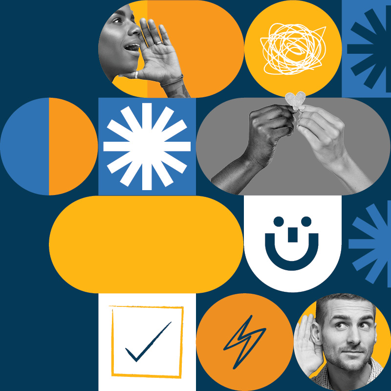
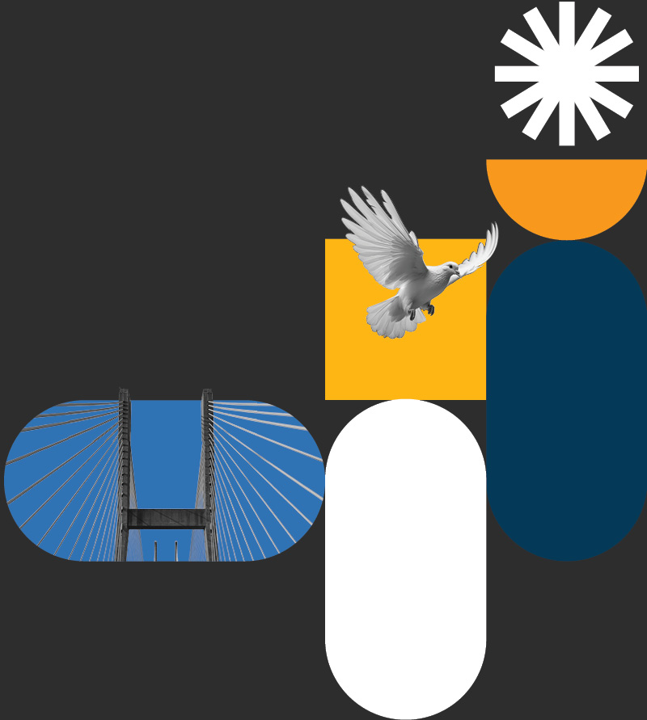
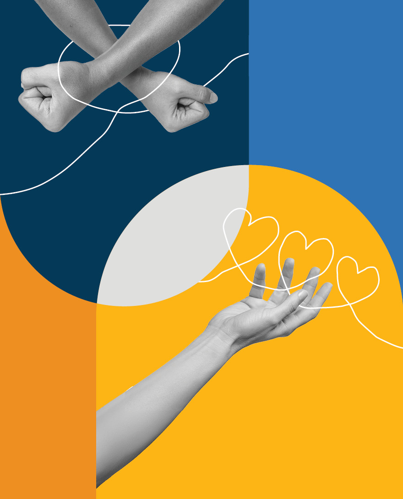

Beyond the brand police:
The new era
of brand pride
A positive and proactive approach to brand compliance through building brand excitement

Why brands need a bridge
Traditional control creates bottlenecks; no guidance creates chaos—the way forward lies somewhere in between
The transition we’re in
Brand management is in transition. The old model (rigid brand books, mandatory approvals, post-facto corrections) can’t keep pace with distributed teams and digital-first delivery. But the opposite extreme (no guidance at all) leads to chaos and inconsistency.
Organizations need a bridge. Something that provides structure without stifling creativity. Education without over-policing. Tools that enable rather than constrain.
This is that bridge: a proactive approach to brand consistency built on excitement rather than enforcement. It maintains standards while creating champions who want to uphold them. It scales through belief, not bureaucracy.


The inversion
The insight that changes everything: compliance is an outcome, not a method
Focusing on compliance after the fact creates resentment, fatigue and a desire to ‘get around’ the brand. Driving broad brand excitement creates pride and a strong incentive structure to deliver the brand consistently across all touchpoints.
You can’t achieve brand consistency by focusing solely on monitoring, correcting and wrist-slapping as a final step. I propose that you can more effectively achieve compliance by building excitement from the start. You make compliance the outcome, not the method. When people understand the brand, believe in its values and have tools that make delivery easy and beautiful, they want to get it right. They become self-correcting stewards of the brand and run compliance checks not out of duty, but to be sure they’re reaching the bar they’ve set for themselves.
Having said that, this isn’t about abandoning structure or standards. It’s about recognizing that enforcement is a trailing indicator: you’re always catching problems after they’ve happened. Excitement is a leading indicator: it prevents problems by making people care before they create. The structure exists, but it works through education, enablement and inspiration rather than review cycles.
The practical difference is profound. Traditional approaches require linear increases in oversight as organizations scale: more reviewers, more approvals, more corrections. Excitement-driven approaches scale exponentially: as more people feel ownership, they become stewards. They educate each other. They take pride in delivering the brand well. The brand becomes self-reinforcing rather than requiring constant intervention.
This matters especially now. Distributed teams, digital-first delivery and always-on brand presence demand a different approach. The old model and its opposite both fail to meet these evolving needs. This approach provides the structure distributed teams need while making that structure self-reinforcing.
This is the business case: excitement produces compliance more efficiently, more sustainably and more joyfully than enforcement or abandonment ever could.
The four inputs
Building brand excitement across the entire organisation
If excitement produces compliance, the question becomes: how do you build excitement? What replaces the old brand books and approval chains?
This framework for building brand excitement emerged from hands-on experience. I’ve led creative and brand teams through four major brand transformations at a leading business services firm over my career. Some succeeded, some struggled. But the pattern became clear. When transformations had these four inputs working together, excitement built naturally. When they were missing, resistance followed. These aren’t theoretical constructs. They’re what I learned from real experience with the successes and the missed opportunities.
Committed leadership
Leadership sets the tone. When leaders champion the brand—not just approve it, but visibly care about it—the organization takes notice. When they treat it as a marketing exercise, it becomes one. Leadership excitement is the permission structure that signals brand matters as a business priority.
A compelling story
The visual brand is an indicator of story, not the story in and of itself. Most great brands tell stories of change or transformation: a change either already achieved, or aspirational. This narrative must be one that people can believe in and see happening: a story they’re excited to tell. Without a compelling story, a brand is just colours and a logo. With one, it’s a rallying point.
Broad brand ownership
A brand owned by everyone is delivered by everyone. This isn’t about delegating brand to marketing, it’s about making brand everyone’s responsibility and everyone’s source of pride. When people understand and believe in the brand, they create excitement naturally and deliver it with minimal policing.
Simple, accessible tools
Complexity kills enthusiasm. Lack of access eliminates adoption entirely. Simple tools and clear processes make correct delivery the path of least resistance. When beautiful, on-brand work is easier to produce than off-brand work—and delivers tangible value while doing it—compliance becomes automatic. Tools aren’t constraints, they’re enablers.
Research validates the approach
The science of engagement and ownership
The four inputs aren’t just philosophy, they’re validated by decades of organizational research. Each input individually drives measurable improvements in employee engagement, brand consistency and business performance. Together, they create compound effects.
Together, they create compound effects. These impacts don’t just add up, they multiply. When leadership models excitement, people connect to values. When tools make delivery easy, people take ownership. When everyone owns the brand, the story becomes authentic. The four inputs create a self-reinforcing system where excitement produces compliance naturally.
of variation in employee engagement is explained by how visibly leaders model and communicate organisational values
International Journal of Environmental Research and Public Health, “Exploring the Leadership–Engagement Nexus” (2021)less stress for employees of high trust companies: these companies also see 50% higher productivity, 76% more engagement and 40% less burnout
Paul J. Zak, Harvard Business Review, “The Neuroscience of Trust” (2017)of the gap between high- and low-performing teams is explained by strategic clarity: understanding the company’s mission, vision and goals
LSA Global 3x Organizational Alignment Modelof employees left a job that didn’t align with their values. Less than 1 in 3 left to pursue better compensation or career advancement
Edelman Trust Barometer (as reported by World Economic Forum, 2021)of purpose-driven employees are highly engaged (vs. only 9% of those who are not purpose-driven) yet only 4 in 10 employees understand their company’s mission and goals
Gallup/Stand Together, “The Power of Purpose” (2025)higher revenue for companies with a highly-engaged workforce
“Engaging and Enabling Employees for Company Success,” Workspan, 2009 (as cited by Bain & Company, 2012)increased productivity from providing access to self-service design tools and 438% ROI over three years
Forrester Total Economic Impact Study of Canva for Teams (2023)of organisations limit template and brand tool access to the creative team or just a couple of teams
Marq, State of Brand Consistency Report (2021)Imagine this in your organization
The question every leader should ask
So what does this mean for your brand? Picture your next rebrand, product launch or brand refresh. Or imagine building broad ownership in your existing brand to drive value across the organization. Instead of policing compliance through endless review cycles and corrections, imagine your team so connected to the brand, so proud of what it represents, that they check themselves. They want to get it right.
Leadership doesn’t just approve the initiative, they champion it. The story isn’t just new colors, it’s a rallying point everyone can articulate. The brand isn’t owned by marketing, it’s delivered by everyone. Tools don’t constrain, they enable beautiful work effortlessly.
This isn’t theoretical. Organizations with highly-engaged teams report 23% higher profitability and 51% lower turnover (Gallup, 2024). They don’t need more brand police. They need more brand believers.
The framework is proven. The research validates it. The business case is clear. The question is: what could brand excitement unleash in your organization?